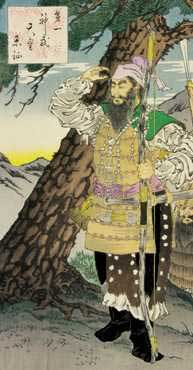

Ancient Mound Era
The culture of ancient burial mounds ( kofun ) dates back to the second half of the 3rd century. - VII century. These were burials where a coffin made of wood or stone was placed in a pit, which was then filled up.
|  |
By the middle of the IV century. a second tribal union is formed, called Yamato and located already definitely in the center of Honshu Island. There is a hypothesis that this tribal union was formed due to the "Eastern Expedition" of Jimmu, the legendary founder of the Japanese state, whose rule, according to some historians, dates back to 271-307. or by 311, and the campaign itself - by 295-300. In 313, the Chinese province of Lolan, formed in 108 BC, was liquidated on the Korean Peninsula, and the state of Goguryeo arose in the north, Silla in the east, and Baekje in the west. In 345, the Japanese king Chuay, breaking off diplomatic relations with Korea, undertook a campaign against Silla, defeated the Koreans and imposed tribute on the defeated state. |
The plundering policies of the Japanese in Korea caused great discontent. A rebellion broke out in the country, to suppress which in 364 the Japanese undertook a new campaign, but this time they suffered a crushing defeat from the Sillans.
Around 370, the Japanese decided to establish contact with the western state of Baekje, hoping with its help to defeat Silla. It is suggested that Chuay was against a new campaign in Korea, for which he was killed in 389 on the orders of his wife Jingu, who became the local ruler. Born to Jingu's son Odzin, who could not be the son of Chuay in time, became the founder of a new dynasty of Korean origin. His mother was the regent with him.

|